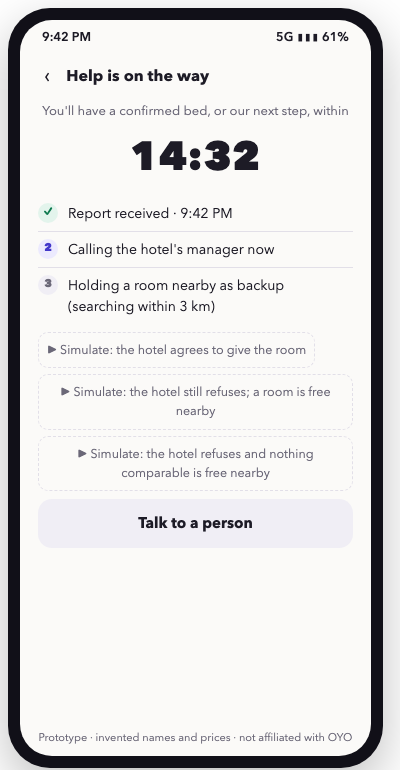
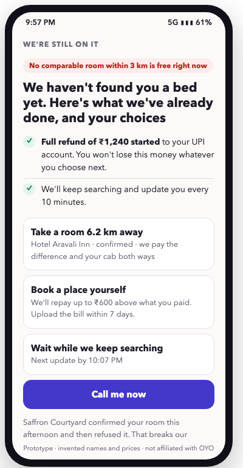
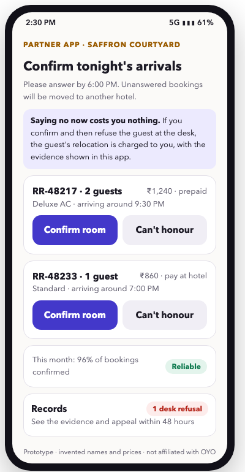

A booking app sells one promise: the room will be there
When it isn't, the guest is at a counter, often at night in an unfamiliar city, sometimes with family, an exam the next morning or a hospital appointment, and their money is already with the app.
"A confirmed booking means nothing if guests are denied check-in upon arrival."
Guest review, after waiting two to three hours at the desk before being told there was no room
This study looks at both sides of that counter: the guest who was turned away and the hotel owner who turned them away, and at OYO, which makes the promise but does not run the front desk. It serves one guest segment first: prepaid guests arriving the same day, because OYO already holds their money and already promises them "alternate accommodation of comparable standards" in its terms.
Guests describe four reasons. Owners describe one grievance.
A script collected the 12,000 most recent Google Play reviews of OYO's guest app and all 913 reviews of its hotel-owner app, Co-OYO. 2,031 guest reviews and 398 owner reviews passed the filter and were coded against a written codebook (see the method note).
Why the hotel said no (479 denials with a stated reason)
No single cause dominates. But the first three, 73% together, were decided before the guest set out.
What owners complain about (181 business complaints)
68% of owner business complaints are about money: what OYO pays, deducts, or sells the room for.
"Sir, a room cannot be provided at such a low price. If you want the room, you will have to pay an extra ₹300."
The desk's words, as a guest reports them
"i give room for 2400 at my property, I was given a price of 1400 on oyo"
A hotel owner, in a Co-OYO review
"Before 1week called them to confirm the details and the manager/ receptionist whoever....saying that all rooms are full"
A guest who asked ahead, and heard the "no" a week early
A second source points the same way. Consumer commissions have held OYO liable in at least twelve denied-check-in cases, recording the same hotel reasons (contract ended, a payment dispute with OYO, extra money demanded), and rejected its "only a booking platform" defence. On a consumer complaint forum, OYO offered another hotel in 4 of 40 denial complaints. Details are in the review analysis and sources.
OYO already forbids this, on paper
The first interview question is "OYO already handles this, so what is new?". OYO's own public pages say:
| Already in place | What it says | Why it doesn't work at the desk |
|---|---|---|
| A promise to the guest | "OYO shall ensure that User is provided with an alternate accommodation of comparable standards", otherwise a refund | No time limit, no stated payer for a pricier room or a cab, no in-app path built for someone at a counter |
| A ban on the owner | The owner "shall not deny check-in to any OYO customer under any circumstances" | The owner never agreed to this booking at this price; OYO sets the price within a range and manages the inventory, and the owner app has no accept step |
| A penalty | Relocation costs "solely borne by the OYO Patron", offset against payouts; suspension possible | The schedule isn't public, and it arrives as one more deduction, the owners' top grievance |
Booking.com makes the property relocate a same-day guest within 30 minutes and pay for it; Airbnb charges a host 50% of the booking for cancelling within 48 hours. Neither needs to ask the hotel to re-confirm, because there the hotel sets its own price and availability. Full feature audit.
Check-in denial is a consent problem, not an arrival problem
OYO makes the promise on the owner's behalf, at a price OYO sets. The owner disagrees with it at the only point the owner controls: the front desk.
That is why the existing rules fail. A ban and a fine after the fact do not change the fact that the owner's real decision is never asked for. The facts are rarely in dispute (the guest is visibly at the desk and the hotel says no openly), so better evidence would not help. What matters is when the owner's "no" surfaces, and what it costs the owner to say it early rather than late.
Prevention
The guest never travels to a room that isn't there. It can catch the 73% of causes that exist in advance, at about ₹120 per move, in daylight. It matters most for volume and cost.
Rescue
When a denial still happens, the guest has a bed within minutes. It costs about ₹400 per case at night. It matters most for trust, and today it reaches only about 10% of denied guests.
Problem definition, including the journey and where each failure could be caught.
RoomReady: ask early, rescue fast, charge fairly
Nine ideas were scored; the MVP combines four of them for prepaid bookings. The two highest-scoring ideas, generous compensation and delisting every owner who denies, were rejected on cost and supply grounds (scoring and overrides).



Open the clickable prototype (guest and owner paths, including the owner's evidence and appeal screen) · Read the PRD
The first version lost ₹6.9 crore a year. The cost model changed the design.
The first design was generous: unlimited free declines for owners, no cap on the price difference OYO pays, a ₹300 credit for every moved guest, and OYO absorbing rescue costs. Costed in the base case, the benefit stayed the same and the cost more than doubled, mostly because a free "no" gets used: owners decline bookings they would otherwise have honoured.
| ₹ crore a year (projected) | Pessimistic | Base | Optimistic |
|---|---|---|---|
| Benefit: guests kept, bookings kept, support saved | 0.8 | 4.0 | 11.4 |
| Cost: top-ups, rescues, extra owner declines, running | 6.2 | 3.9 | 3.0 |
| Net, RoomReady as designed | −5.4 | +0.1 | +8.4 |
| Net, first generous version (base inputs) | −6.9 |
On a whiteboard: ~3.5 crore bookings × 0.4% denied = 1.4 lakh denials; catch 45% before travel and rescue 60% of the rest; each guest kept is worth ~₹600 of future gross profit. That is ~₹4 crore of benefit, roughly cancelled by ~₹4 crore of top-ups, rescues, extra owner declines and running cost.
So this is a promise-keeping project that roughly pays for itself, not a profit project, and it loses money if owners abuse the free "no". Booking volume comes from India GBV in OYO's latest draft prospectus divided by an assumed booking value; the denial rate is an assumption because no per-booking figure is public. Download the model (live formulas, every input sourced or marked "assumption").
One promise to measure, and the guardrails that matter
- North star: the share of prepaid bookings where the guest sleeps in a confirmed room at the price paid, with nothing extra at the desk. It can't be gamed by refunding people; its weakness is that it moves slowly.
- Leading indicator: the share of bookings owners confirm by the deadline.
- Guardrails: extra owner declines (kill above 0.3% of bookings), net cost per 1,000 bookings, owner churn, share of owner appeals upheld, and desk-report abuse.
- Experiment: randomised by property, not by guest, because the rules change the owner's behaviour. About 570 properties per arm for 8 weeks detects a 30% fall in desk denials.
How this was done, and what it can't tell you
How the reviews were coded. The reviews were coded by an AI model (Claude, made by Anthropic) against a written codebook, not by hand. Human validation of a random sample of 100 coded reviews is pending. Until it is done, treat every count from the reviews as AI-coded and not yet checked by a person.
- Reviews show which problems exist and how they feel, not how often they happen per booking. Reviewers skew angry: 93% of the denial reviews are 1-star.
- No interviews with guests, owners or OYO staff were done. The owner side rests on 398 app reviews (most from before 2023), press coverage and consumer-court records.
- OYO's in-app help flow, its denial penalty schedule and its real denial rate are not public; the impact model's two most important inputs are assumptions.
- About 7% of denial reviews are clearly from outside India; leaving them out changes the headline shares by less than 2 points.
- Every number on this page traces to the review analysis, the impact model or sources; every quote is checked by script against the review data; the coding rules are in the codebook.
Three questions to answer before building anything
- Talk to five hotel owners or front-desk managers about how they decide to refuse an OYO booking, and whether they would answer a 2 PM confirmation.
- Ask someone at OYO for two numbers: the real denial rate per prepaid booking, and how often today's rescue ends in a move rather than a refund.
- Test the owner price floor: let owners set a minimum price, with OYO funding discounts below it. It attacks the price dispute at its source but changes the business model, so it needs its own study.